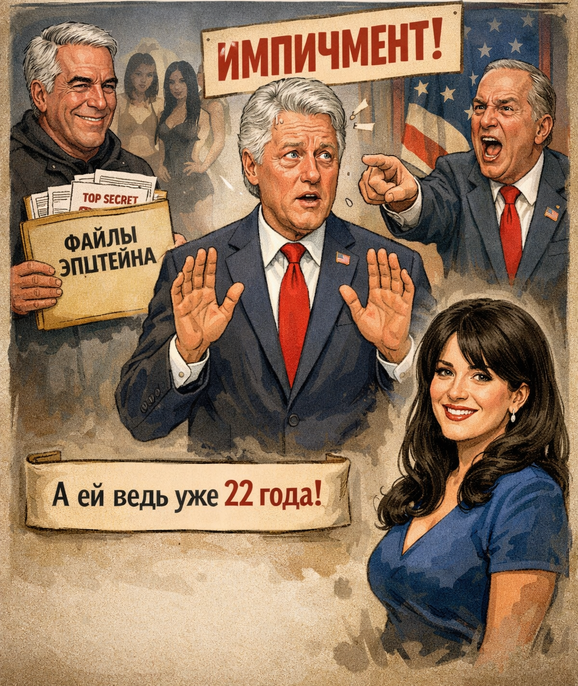
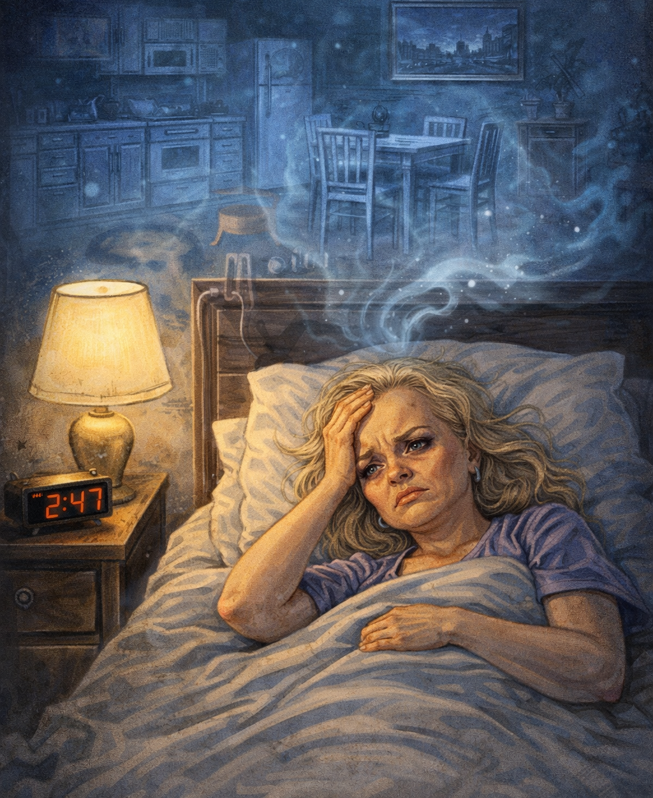
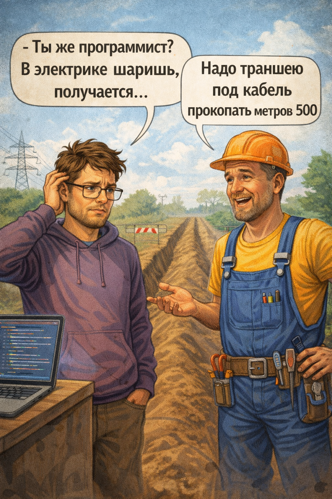
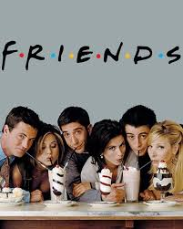

ТОП 3 АНЕКДОТА
-
После публикации файлов Эпштейна стало понятно, что импичмент Биллу Клинтону хотели объявить из-за того, что Моника Левински была совершеннолетней

-
По ночам у Ларисы Долиной очень сильно ноет фантомная жилплощадь

-
- Ты же программист? В электрике шаришь, получается... Надо траншею под кабель прокопать метров 500

КОНТЕНТ
Сериал Друзья
Классный сериал с кучей старомодных и глупых шуток. Самое то чтобы посмотреть на каникулах когда не охото выходить на улицу

Цитаты
- ❝ Я довел человека вдвое больше меня до слез, со мной такого не было с четырехлетнего возраста, когда я вымыл папин Порш металлической щеткой... ❞
- ❝ — Что там у тебя, пирог? — Да, отрезать тебе? — Крошечный кусочек...побольше!...больше!...чего ты боишься, режь нормальный кусок! ❞
- ❝ Сначала ты соврал, так? Потом ты соврал, что соврал. Потом ты соврал, что соврал, что соврал. Так что пока ты не соврал, что соврал, что соврал, что соврал, что соврал... ладно, в общем я должен тебе сказать... ХВАТИТ ВРАТЬ! ❞
РПЛ
| Время проведения | Название команды противника | Итоговый счет |
|---|---|---|
| 01.03 19:00 | Ахмат | Матч еще не проведен |